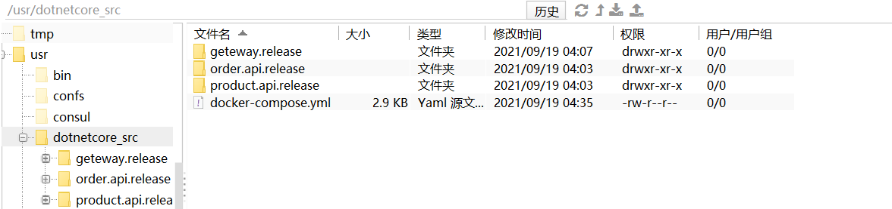
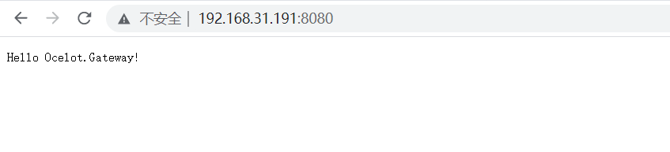

前言
上一篇中使用 CAP 完成了一个简单的 Eventbus，实现了服务之间的解耦和异步调用，并且做到数据的最终一致性。搞到这里系统环境已经比较复杂了，想把整个系统运行起来会非常繁琐：要运行 Consul、订单服务、产品服务、网关、鉴权中心 、RabbitMQ，本篇将使用 Docker Compose 来解决以上问题，仅需一个简单的命令，即可启动整个环境。
Docker Compose
什么是Docker Compose？
Compose 是用于定义和运行多容器 Docker 应用程序的工具。通过 Compose可以使用 YML 文件来配置应用程序需要的所有服务。然后，使用一个命令，就可以从 YML 文件配置中创建并启动所有服务
简单来理解，Compose类似一个批量工具，可以执行一组命令，支持批量构建镜像，批量启动容器，批量删除容器等等功能。Windows的 Docker Desktop 中已经包括了 Compose，Linux下 Compose 则需要单独安装。关于 Compose 更多信息参考 【Docker三剑客之DockerCompose】 。
yml file
yml 文件是使用 Compose 必不可少的，在编写 yml 文件之前需要准备Dockerfile。之前的章节中，网关服务不是在 Docker 中运行的，现在全部放到Docker中。确保解决方案中每个项目都添加Docker支持。
1 2 3 4 5 6 7 8 9 FROM mcr.microsoft.com/dotnet/aspnet:5.0 AS baseWORKDIR /app COPY . /app ENTRYPOINT ["dotnet" , "Ocelot.Geteway.dll" ]
新建 docker-compose.yml 文件，以下是 docker-compose.yml文件内容：
1 2 3 4 5 6 7 8 9 10 11 12 13 14 15 16 17 18 19 20 21 22 23 24 25 26 27 28 29 30 31 32 33 34 35 36 37 38 39 40 41 42 43 44 45 46 47 48 49 50 51 52 53 54 55 56 57 58 59 60 61 62 63 64 65 66 67 68 69 70 71 72 73 74 75 76 77 78 79 80 81 82 83 84 85 86 87 88 89 90 91 92 93 94 95 96 97 98 99 100 101 102 103 104 105 106 107 108 109 110 111 112 113 114 115 116 117 118 119 120 121 122 123 version: '3.4' services: apigateway: image: gateway build: context: . dockerfile: ./gateway.release/Dockerfile ports: - '8080:8080' environment: - ASPNETCORE_URLS=http://+:8080 networks: - my-testnet depends_on: - orderapi1 - orderapi2 - orderapi3 - productapi1 - productapi2 - productapi3 orderapi1: image: order.api build: context: . dockerfile: ./order.api.release/Dockerfile ports: - 80 :80 environment: - ASPNETCORE_URLS=http://+:80 - ConsulSetting:ServiceIP=80 - ConsulSetting:ServicePort=80 networks: - my-testnet depends_on: - consul - rabbitmq orderapi2: image: order.api ports: - '81:80' environment: - ASPNETCORE_URLS=http://+:81 - ConsulSetting:ServiceIP=orderapi2 - ConsulSetting:ServicePort=81 networks: - my-testnet depends_on: - orderapi1 orderapi3: image: order.api ports: - '82:80' environment: - ASPNETCORE_URLS=http://+:82 - ConsulSetting:ServiceIP=orderapi3 - ConsulSetting:ServicePort=82 networks: - my-testnet depends_on: - orderapi1 productapi1: image: product.api build: context: . dockerfile: ./product.api.release/Dockerfile ports: - '85:80' environment: - ASPNETCORE_URLS=http://+:85 - ConsulSetting:ServiceIP=productapi1 - ConsulSetting:ServicePort=85 networks: - my-testnet depends_on: - consul - rabbitmq productapi2: image: product.api ports: - '86:80' environment: - ASPNETCORE_URLS=http://+:86 - ConsulSetting:ServiceIP=productapi2 - ConsulSetting:ServicePort=86 networks: - my-testnet depends_on: - productapi1 productapi3: image: product.api ports: - '87:80' environment: - ASPNETCORE_URLS=http://+:87 - ConsulSetting:ServiceIP=productapi3 - ConsulSetting:ServicePort=87 networks: - my-testnet depends_on: - productapi1 consul: image: consul container_name: consul ports: - '8500:8500' networks: - my-testnet rabbitmq: image: rabbitmq:3.9 .5 -management container_name: rabbitmq ports: - 15672 :15672 - 5672 :5672 networks: - my-testnet networks: my-testnet: driver: bridge
以上 yml 文件定义了网关服务、订单服务、产品服务、Consul，rabbitMQ 9个服务（容器），和一个容器网络 my-testnet。这里 product.api和 order.api 是基于同样的镜像各运行了3个容器，真实开发中他们应该分布在多个docker主机中。将 yml文件扔到虚机目录中（这里为了快速测试，真实不会这么搞）。

容器网络
之前容器之间通讯是通过容器的IP访问，虽然是可以访问但不友好。更好的方式是：自定义一个bridge网络，将所有服务（容器）加入这个网络中，那么容器之间就可以直接通过服务名称通信了。（这里暂时没这么做）bridge 模式只是docker网络模式中的一种，更多信息参考：【Docker高级网络配置#容器跨网桥通信】 。
构建与启动
完成以上操作后，进入虚机目录执行docker-compose up -d
1 2 3 4 5 6 7 8 9 10 11 12 13 14 15 16 17 18 19 20 21 22 23 24 25 26 27 28 29 30 31 32 33 [root@centos-01 dotnetcore_src] Creating rabbitmq ... Creating consul ... Creating rabbitmq Creating rabbitmq ... done Creating dotnetcoresrc_productapi1_1 ... Creating dotnetcoresrc_orderapi1_1 ... Creating dotnetcoresrc_productapi1_1 Creating dotnetcoresrc_orderapi1_1 ... done Creating dotnetcoresrc_productapi1_1 ... done Creating dotnetcoresrc_orderapi2_1 ... Creating dotnetcoresrc_productapi3_1 ... Creating dotnetcoresrc_orderapi3_1 Creating dotnetcoresrc_productapi2_1 ... Creating dotnetcoresrc_productapi3_1 Creating dotnetcoresrc_orderapi2_1 Creating dotnetcoresrc_orderapi3_1 ... done Creating dotnetcoresrc_apigateway_1 ... Creating dotnetcoresrc_apigateway_1 ... done [root@centos-01 dotnetcore_src] CONTAINER ID IMAGE COMMAND CREATED STATUS PORTS NAMES 82e1221c03b5 gateway "dotnet Ocelot.Gatew…" 6 seconds ago Up 5 seconds 0.0.0.0:8080->8080/tcp, :::8080->8080/tcp dotnetcoresrc_apigateway_1 90a760680cba product.api "dotnet Product.Api.…" 7 seconds ago Up 6 seconds 0.0.0.0:86->80/tcp, :::86->80/tcp dotnetcoresrc_productapi2_1 352c6bce65e6 product.api "dotnet Product.Api.…" 7 seconds ago Up 6 seconds 0.0.0.0:87->80/tcp, :::87->80/tcp dotnetcoresrc_productapi3_1 eafce74e7582 order.api "dotnet Order.Api.dll" 7 seconds ago Up 6 seconds 0.0.0.0:81->80/tcp, :::81->80/tcp dotnetcoresrc_orderapi2_1 6b9c45e89c55 order.api "dotnet Order.Api.dll" 7 seconds ago Up 6 seconds 0.0.0.0:82->80/tcp, :::82->80/tcp dotnetcoresrc_orderapi3_1 2acb5ed6125e order.api "dotnet Order.Api.dll" 8 seconds ago Up 7 seconds 0.0.0.0:80->80/tcp, :::80->80/tcp dotnetcoresrc_orderapi1_1 e9c6a88e6a72 product.api "dotnet Product.Api.…" 8 seconds ago Up 7 seconds 0.0.0.0:85->80/tcp, :::85->80/tcp dotnetcoresrc_productapi1_1 84b03969229f consul "docker-entrypoint.s…" 9 seconds ago Up 8 seconds 8300-8302/tcp, 8301-8302/udp, 8600/tcp, 8600/udp, 0.0.0.0:8500->8500/tcp, :::8500->8500/tcp consul aff9066b3ff0 rabbitmq:3.9.5-management "docker-entrypoint.s…" 9 seconds ago Up 8 seconds 4369/tcp, 5671/tcp, 0.0.0.0:5672->5672/tcp, :::5672->5672/tcp, 15671/tcp, 15691-15692/tcp, 25672/tcp, 0.0.0.0:15672->15672/tcp, :::15672->15672/tcp rabbitmq [root@centos-01 dotnetcore_src]
浏览器访问网关测试：

Postman调用下单接口：
查看数据库：
至此就完成了使用 docker-compose 一键启动整个环境，想要摧毁这个环境也很简单，只需要一句 docker-compose down。